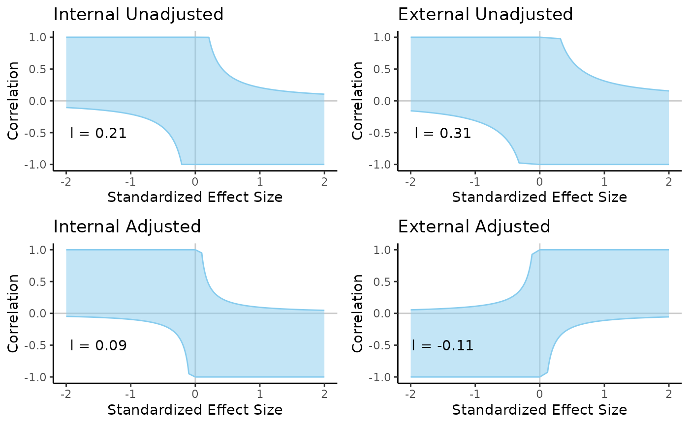
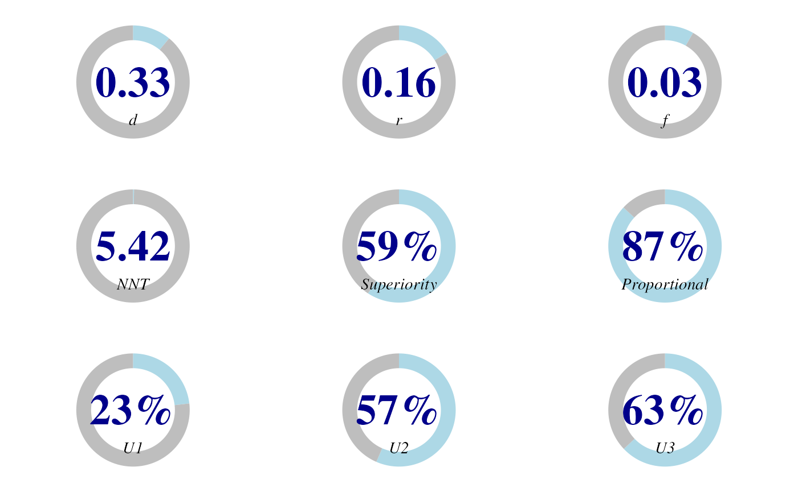
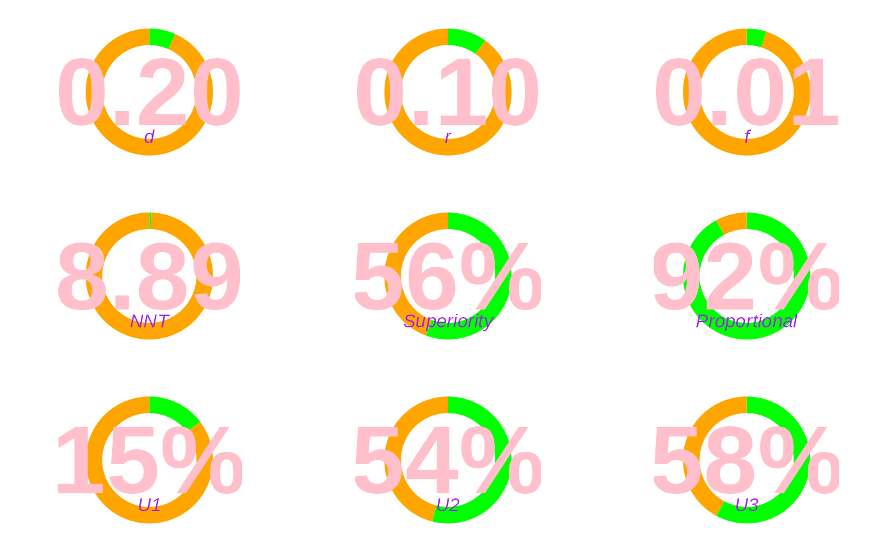

Package Functions
Package_Functions.RmdInstallation
To install the package, please use:
library(devtools)
install_github("doomlab/ViSe")This installation will give you the latest version of the package, regardless of status on CRAN.
Example
To demonstrate the use of visual sensitivity analysis, we use a study
of the effect of child maltreatment on the extent of mental health
problems in terms of internalising and externalising behaviour. The
study of Kisely and colleagues (2018) was based on a general population
sample in Brisbane, Australia, and compared 3554 mother-child pairs
without ‘substantiated child maltreatment’ to, for example, 73 pairs
with child neglect. Note that the results vary across different types of
maltreatment assessed, we choose child neglect because its results (a
smaller but still considerable l after adjustment) are particularly
suited to illustrating sensitivity analysis. Maltreatment was assessed
‘by linkage to state child protection agency data’. Internalising and
externalising behaviours were measured using the Youth Self-Report (YSR)
scale at around the age of 21. The study reports unadjusted mean
differences and mean differences adjusted for ‘gender, parental
ethnicity, maternal age, family income, maternal relationship status,
maternal education, youth income level, youth education level, youth
marital status’ (e.g., likely based on ordinary least squares
regression, but the paper does not specify that). To obtain the
estimates and two-tailed 95% confidence intervals on the d scale, we
used the calculate_d function.
See supplemental document at https://static.cambridge.org/content/id/urn:cambridge.org:id:article:S0007125018002076/resource/name/S0007125018002076sup001.docx
Calculate effect size
Unadjusted scores
We can calculate the unadjusted scores from the supplemental material provided by the authors.
# internalising
internal_unadj <-
calculate_d(m1 = 14.37, # neglect mean
sd1 = 10.716, # neglect sd
n1 = 71, # neglect n
m2 = 10.69, # none mean
sd2 = 8.219, # none sd
n2 = 3653, # none n
a = .05, # alpha/confidence interval
lower = TRUE) # lower or upper bound
internal_unadj$d # effect size
#> [1] 0.4448249
internal_unadj$dlow # non-directional non-central lower
#> [1] 0.2097233
internal_unadj$dlow_central # non-directional central lower
#> [1] 0.2096767
internal_unadj$done_low # one-tailed non-central lower
#> [1] 0.2475166
internal_unadj$done_low_central # one-tailed central lower
#> [1] 0.2474974
# externalising
external_unadj <-
calculate_d(m1 = 13.14, sd1 = 8.066, n1 = 71,
m2 = 9.42, sd2 = 6.764, n2 = 3653,
a = .05, lower = TRUE)
external_unadj$d # effect size
#> [1] 0.5478007
external_unadj$dlow # non-directional non-central lower
#> [1] 0.3125801
external_unadj$dlow_central # non-directional central lower
#> [1] 0.3125404
external_unadj$done_low # one-tailed non-central lower
#> [1] 0.3503914
external_unadj$done_low_central # one-tailed central lower
#> [1] 0.3503791Note, you can also calculate directly from a t-test output in R, a t-value, or the dataframe of scores.
Adjusted scores
The adjusted scores are not displayed in raw score format, but rather
mean difference scores. We can again use calculate_d in a
different way:
# internalising
m_diff <- 2.73
lower <- 0.77
# ci is m - t_alpha*SE = lower
SE <- (m_diff - lower)/qt(.025, # .05 / 2
df = (71+3653 - 2), # n - 1 + n - 1
lower.tail = FALSE)
SE
#> [1] 0.9996932
# confirm correct
# p value is listed as .006
pt(q = m_diff / SE, # t value
df = (71+3653 - 2), # df
lower.tail = FALSE)*2 # upper tail * 2 for two tails
#> [1] 0.006347121
internal_adj <-
calculate_d(t = m_diff/SE, # t-score
n1 = 71, # neglect n
n2 = 3653, # none n
a = .05, # alpha/confidence interval
lower = TRUE) # lower or upper bound
internal_adj$d # effect size
#> [1] 0.08952364
internal_adj$dlow # non-directional non-central lower
#> [1] 0.09223112
internal_adj$dlow_central # non-directional central lower
#> [1] -0.1454161
internal_adj$done_low # one-tailed non-central lower
#> [1] 0.1300084
internal_adj$done_low_central # one-tailed central lower
#> [1] -0.1076289
# externalising
m_diff <- 3.10
lower <- 1.49
# ci is m - t_alpha*SE = lower
SE <- (m_diff - lower)/qt(.025, # .05 / 2
df = (71+3653 - 2), # n - 1 + n - 1
lower.tail = FALSE)
SE
#> [1] 0.8211765
# confirm correct
# p value is listed as < .001
pt(q = m_diff / SE, # t value
df = (71+3653 - 2), # df
lower.tail = FALSE)*2 # upper tail * 2 for two tails
#> [1] 0.0001624566
external_adj <-
calculate_d(t = m_diff/SE, # t-score
n1 = 71, # neglect n
n2 = 3653, # none n
a = .05, # alpha/confidence interval
lower = TRUE) # lower or upper bound
external_adj$d # effect size
#> [1] 0.1237562
external_adj$dlow # non-directional non-central lower
#> [1] 0.2172419
external_adj$dlow_central # non-directional central lower
#> [1] -0.1111915
external_adj$done_low # one-tailed non-central lower
#> [1] 0.2550364
external_adj$done_low_central # one-tailed central lower
#> [1] -0.07340311Visualisation of c
Given these statistics, we can use visualize_c to
visualize the combinations of effect size and correlation that would
support an effect.
plots_1 <- visualize_c(dlow = internal_unadj$dlow_central)$graph +
ggtitle("Internal Unadjusted") +
annotate("text", label = paste0("l = ", round(internal_unadj$dlow_central, 2)),
x = -1.5, y = -.5)
plots_2 <- visualize_c(dlow = external_unadj$dlow_central)$graph +
ggtitle("External Unadjusted") +
annotate("text", label = paste0("l = ", round(external_unadj$dlow_central, 2)),
x = -1.5, y = -.5)
plots_3 <- visualize_c(dlow = internal_adj$dlow_central)$graph +
ggtitle("Internal Adjusted") +
annotate("text", label = paste0("l = ", round(internal_adj$dlow_central, 2)),
x = -1.5, y = -.5)
plots_4 <- visualize_c(dlow = external_adj$dlow_central)$graph +
ggtitle("External Adjusted") +
annotate("text", label = paste0("l = ", round(external_adj$dlow_central, 2)),
x = -1.5, y = -.5)
plot_grid(plots_1, plots_2,
plots_3, plots_4,
nrow = 2)
ggsave(filename = "visualize_c.png")
#> Saving 7.29 x 4.51 in imageCalculation of adjusted values
adjusted_coef(effect_xz = .2, # effect of x and z
effect_uxz = .4, # effect of x, u, and z
effect_d = .12) # effect size of difference score between groups
#> [1] 0.152Visualization of d
visual_d <-
estimate_d(m1 = 14.37, # neglect mean
sd1 = 10.716, # neglect sd
n1 = 71, # neglect n
m2 = 10.69, # none mean
sd2 = 8.219, # none sd
n2 = 3653) # none n
visual_d$d
#> [1] 0.4448249
visual_d$graph
estimate_d(d = .25)$graph
Calculation between effect sizes and other numbers
d_to_f2(d = .25)
#> $f
#> [1] 0.125
#>
#> $f2
#> [1] 0.015625
d_to_nnt(d = .25)
#> [1] 7.126761
d_to_r(d = .25)
#> [1] 0.1240347
probability_superiority(d = .25)
#> [1] 0.5701581
proportion_overlap(d = .25)
#> $u1
#> [1] 0.1809524
#>
#> $u2
#> [1] 0.5497382
#>
#> $u3
#> [1] 0.5987063
#>
#> $p_o
#> [1] 0.9005236